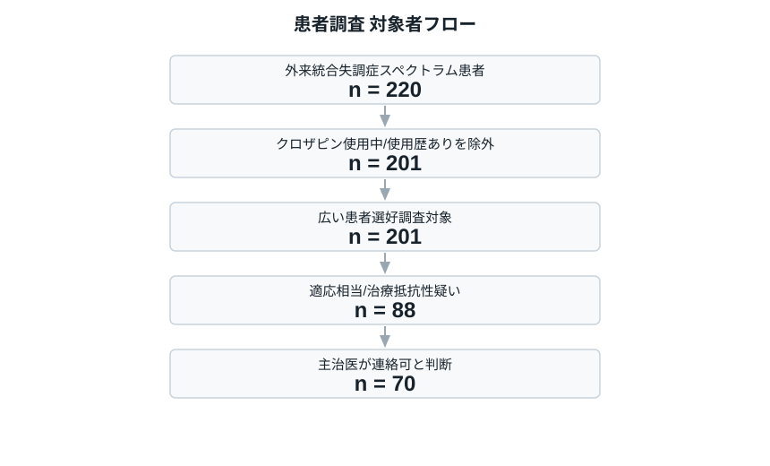
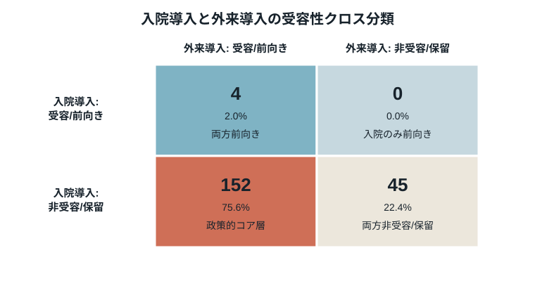
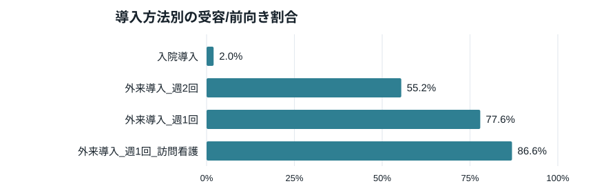
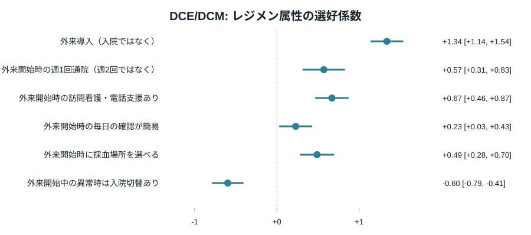
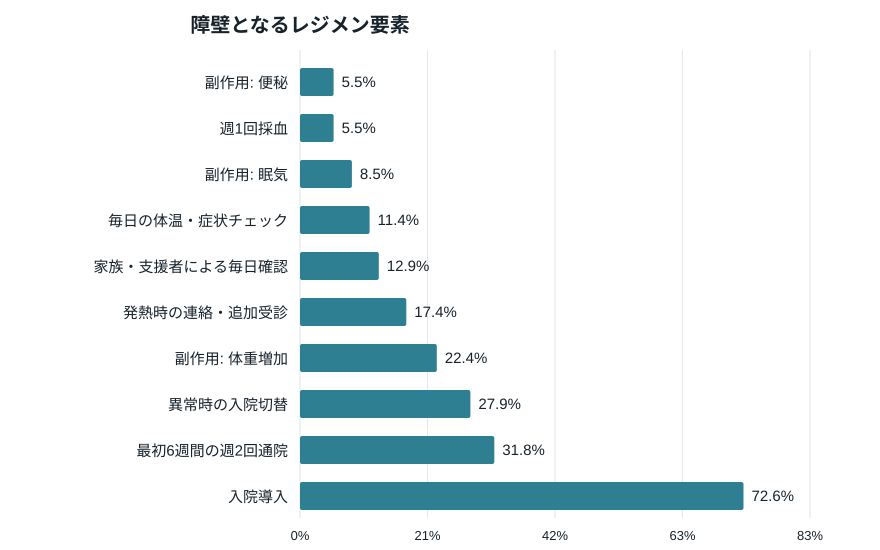
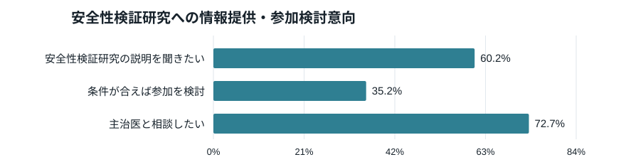

この版での改善意図
- 外来導入レジメン案とコメントから、最初6週間の通院頻度、同居/訪問看護支援、毎日チェック、発熱時対応をDCE属性に入れた。
- 便秘、眠気、体重増加、頻脈など患者に説明すべき具体的副作用を障壁項目へ追加した。
図1. 対象者フロー

配置理由: クロザピン使用中・使用歴ありを除外し、広い未使用外来患者と適応相当・未導入候補を分けることで、DCEの主解析集団と安全性検証研究の潜在対象者を区別する。
| 項目 | 広い未使用外来患者 | 適応相当・未導入候補 |
|---|---|---|
| 人数 | 201 | 88 |
| 年齢, 中央値 (IQR) | 44 (36-53) | 44 (35-52) |
| 女性, n (%) | 87 (43.3) | 37 (42.0) |
| 罹病期間, 中央値 (IQR) | 12 (8-15) | 13 (8-15) |
| 過去入院回数, 中央値 (IQR) | 2 (1-3) | 2 (1-3) |
| mGAF-Function, 中央値 (IQR) | 47 (40-57) | 40 (33-45) |
| 適切に試された抗精神病薬数, 中央値 (IQR) | 3 (2-4) | 4 (3-5) |
| 安定しているがもっと良くなりたい, n (%) | 123 (61.2) | 66 (75.0) |
配置理由: 回答者背景は、患者選好が疾患重症度や適応相当性によって異なる可能性を解釈するために必要である。主治医調査側の患者特徴と対応づけられる変数を中心に置く。
図2. 入院導入と外来導入の受容性クロス分類

配置理由: 当局向けの中核結果。入院導入では非受容/保留だが、外来導入なら受容/前向きとなる層を明示し、入院要件が治療アクセスを妨げている可能性を示す。
図3. 導入方法別の受容性

配置理由: 入院導入、外来週2回、外来週1回、訪問看護付き外来を同じ尺度で比較し、どの条件で受容性が上がるかを直感的に示す。
図4. DCE/DCMによるレジメン属性の選好

配置理由: Vignette比較で政策的な受容性差を示したうえで、DCE/DCMにより通院頻度、訪問看護、毎日チェック、採血場所、異常時入院切替などのトレードオフを定量化する。DCEは広い未使用外来患者で主解析、適応相当候補では探索的に扱う。
図5. レジメン構成要素別の障壁

配置理由: レジメン案のコメントで論点となった週2回通院、毎日チェック、支援者確認、発熱時対応、異常時入院切替、便秘・眠気・体重増加を、患者本人の負担として確認する。
図6. 安全性検証研究への情報提供・参加検討意向

配置理由: 来年度の安全性検証研究に向け、実際のリクルートにつなげられる候補者数を見積もる。ただし本調査では参加同意ではなく、今後の説明希望・相談希望として扱う。
図7. 医師判断との接続
配置理由: 主治医調査では患者受け入れ見込みを医師が推定する。患者調査では本人回答を取得し、医師が「受け入れない」と見込むが患者本人は外来導入を前向きに考える層を可視化する。患者単位で対応づけられる場合は、医師判断へのフィードバック資料になる。
v3では概念のみ提示し、後続版で図化する。